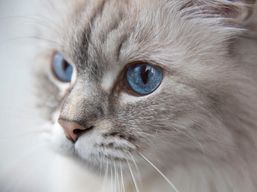

— произошла от сибирской. Лишь в 90-х сибирца с окрасом колор-пойнт и голубыми глазами выделили в отдельную породу. Маскарадной ее прозвали из-за того, что очертания цвета шерсти на мордочке напоминают маску. Хвост невака очень пушистый и напоминает лисий.
Характер:
Невские маскарадные очень привязаны к хозяину. Чаще всего из нескольких членов семьи они выбирают «любимца» и готовы принимать внимание только от него. По настроению кошка позволит погладить себя незнакомому человеку, но если ей что-то не понравится, фыркнет и убежит. Невские маскарадные не прочь поиграть, правда, особой активности не проявляют. А вот вычесываться они любят — и это плюс, так как их длинная шерсть, как и у сибирских кошек, имеет густой подшерсток и требует тщательного ухода.